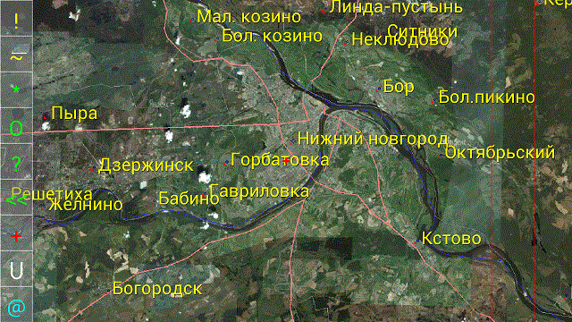

|
Geo.Log program help |
|
Main program window shows a map depending on visualization settings. These settings allow to combine various map sources, raster or vectorized.  1. Right area – area of navigation. In the “default” navigation mode that area contains two red vertical lines. Zone between first and second lines is for scaling. Zone next to second line is for rotating. Zone prior to the first line – for moving. In an “arrow” navigation mode area contains buttons with arrows for the appropriate actions. 2. Left area – area of control buttons: “!” - update button. This button causes window to be refreshed immediately. “~” - viewing configuration button opens a dialog screen with viewing settings. “*” - “my places” button opens screen with the list of locations that bookmarked by the user. “O” - “my objects” button opens screen with the list of mobile objects that bookmarked by the user. “?” - search button opens a screen that allows to search map objects by name context. “<<” - “go back” button to go to the last visited location. “+” - “editor” button opens in-place map editor. User can draw inscriptions/drawings on the map. “C” - “chat” button opens screen for user-to-user instant messaging. “@” - “tracker” button opens the screen with tracker parameters such as current state, GPS position, speed etc. That screen contains some control elements (“Alarm button”, “POI button” etc). “N” - “North” button aligns screen to the North Pole. © 2013 geo-log.googlecode.com |